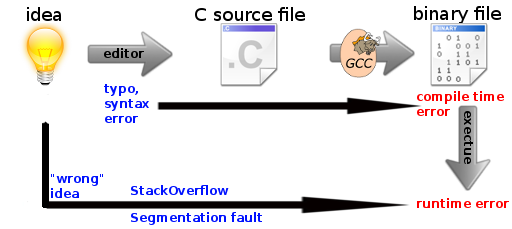

As I began with programming C, I had enormous difficulties to produce working code. Most of the time it didn't even compile, but when it compiled and I got a runtime error, I basically read my whole code again. I didn't don't know any good online resource for C, so I've always searched with Google for answers to questions that I couldn't properly formulate. One question that is important for beginners is How do I find missing C header files (without Internet)? and another one might be: How can I debug my programs?
Compile time vs. runtime
A typical C workflow looks like this: You have an idea, you write your code, you compile it and you run it.
{kind=link}

You might make multiple errors. Simple typos or syntax errors are almost always detected at compile time. They are called "compile time errors". Others, like the access of an array-index that isn't in the array might only occur sometimes at runtime, depending on the input. Those are runtime errors and they are much more difficult to detect. Additionally, they can not be reproduced that easily as compile time errors can.
gdb
If you want to find runtime errors, you should deactivate all optimization flags and add debugging symbols. A gcc call might look like this:
gcc mySourceFile.c -g
This produces a binary file called "a.out".
Now you should run gdb - GNU debug:
gdb ./a.out
Within the command line program GNU debug you have to enter:
run ./a.out
You should now be able to see the line in which the runtime-error occurs.
valgrind
You might want to give valgrind a try.
Uninitialised value was created by a stack allocation at 0x80488BC: This could mean that you used an uninitialized variable. Check your variable initializations from the given point. Add --track-origins=yes and run valgrind again.